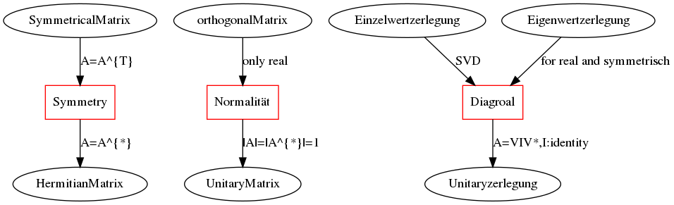

Math
Table of Contents
Statistic
Gauss distribution
标准高斯分布的积分包含了高斯积分
Co-variance matrix 协方差矩阵
for i = {1…n}, \(x_{i}\) is a random variable, which belong to Gaussian distribution
set \[ X = \left( \begin{aligned} x_{1} \\ x_{2}\\ . \\. \\x_{n} \end{aligned}\right) \]
\[ \bar{X} = \left( \begin{aligned} \bar{x}_{1} \\ \bar{x}_{2}\\ . \\. \\ \bar{x}_{n} \end{aligned} \right) \] co-variance matrix \(\Sigma = E [(X-\bar{X})(X-\bar{X})^{T} ]\)
\begin{equation} \Sigma = \left( \begin{array}{c} x_{1}-\bar{x}_{1} \\ x_{2}-\bar{x}_{2} \\ x_{3}-\bar{x}_{3} \\ .. \\ x_{n}-\bar{x}_{n} \end{array} \right) \left( \begin{array}{ccccc} x_{1}-\bar{x}_{1} & x_{2}-\bar{x}_{2} & x_{3}-\bar{x}_{3} & .. & x_{n}-\bar{x}_{n} \end{array} \right) \end{equation}对角线上是对应元素的方差，其他是相对于两个元素的协方差
linear Argebra
Matrix
Graph
digraph diagramm {
Symmetry [shape=box,color=red]
Normalität [shape=box,color=red]
Diagroal [shape=box,color=red]
SymmetricalMatrix -> Symmetry[label= "A=A^{T}"] ;
Symmetry -> HermitianMatrix [label= "A=A^{*}"];
orthogonalMatrix -> Normalität[label = "only real"];
Normalität -> UnitaryMatrix[label = "|A|=|A^{*}|=1"] ;
Einzelwertzerlegung -> Diagroal [label = "SVD"] ;
Eigenwertzerlegung -> Diagroal [label = "for real and symmetrisch"];
Diagroal -> Unitaryzerlegung [label ="A=VIV*,I:identity"];
}

transpose Matrix
\(A^{T}\)
Conjugate transpose Matrix
\[ A^{*} = (\bar{A})^{T} = \bar{A^{T}}\] 共轭转置矩阵, 先共轭再转置，还是先转置再共轭都可以。
Normal Matrix
\[ A^{*}A = A A^{*}\] 正定矩阵, 是转置和本身满足交换律 \[ A = URDU^{-1} \] 可酉变换
Unitary Matrix
\[ A^{*}A = A A^{*} = I \] 酉矩阵，是正定矩阵, 即转置和本身满足交换律，而且等于 I
orthogonal matrix
实数酉矩阵 \[ {\displaystyle Q^{T}=Q^{-1}\Leftrightarrow Q^{T}Q=QQ^{T}=I} \] 得该矩阵的转置矩阵为其逆矩阵
Hermitian matrix
\[ A = A^{H}\], \(a_{i,j} = \bar{a_{j,i}}\) 共轭对称 埃尔米特矩阵，厄米特矩阵，厄米矩阵,所有元素对称出共轭
Transform
Jacobin matrix
wikipedia chinese link englich link
for \[ Y_{m} = f(X_{n}), Y =(y_{1}, y_{2}, y_{3}....y_{m}), X = (x_{1} ,x_{2}....x_{n}) \] \[ d_{Y} = J d_{x}\], \[ {\displaystyle \mathbf {J} ={\begin{bmatrix}{\dfrac {\partial \mathbf {f} }{\partial x_{1}}}&\cdots &{\dfrac {\partial \mathbf {f} }{\partial x_{n}}}\end{bmatrix}}={\begin{bmatrix}{\dfrac {\partial f_{1}}{\partial x_{1}}}&\cdots &{\dfrac {\partial f_{1}}{\partial x_{n}}}\\\vdots &\ddots &\vdots \\{\dfrac {\partial f_{m}}{\partial x_{1}}}&\cdots &{\dfrac {\partial f_{m}}{\partial x_{n}}}\end{bmatrix}}} \] 由球坐标系到直角坐标系的转化由 F: ℝ+ × [0, π] × [0, 2π) → ℝ3 函数给出， 其分量为： \[ {\displaystyle {\begin{aligned}x&=r\sin \theta \cos \varphi ;\\y&=r\sin \theta \sin \varphi ;\\z&=r\cos \theta .\end{aligned}}} \] 此坐标变换的雅可比矩阵是 \[ {\displaystyle \mathbf {J} _{\mathbf {F} }(r,\theta ,\varphi )={\begin{bmatrix}{\dfrac {\partial x}{\partial r}}&{\dfrac {\partial x}{\partial \theta }}&{\dfrac {\partial x}{\partial \varphi }}\\[1em]{\dfrac {\partial y}{\partial r}}&{\dfrac {\partial y}{\partial \theta }}&{\dfrac {\partial y}{\partial \varphi }}\\[1em]{\dfrac {\partial z}{\partial r}}&{\dfrac {\partial z}{\partial \theta }}&{\dfrac {\partial z}{\partial \varphi }}\end{bmatrix}}={\begin{bmatrix}\sin \theta \cos \varphi &r\cos \theta \cos \varphi &-r\sin \theta \sin \varphi \\\sin \theta \sin \varphi &r\cos \theta \sin \varphi &r\sin \theta \cos \varphi \\\cos \theta &-r\sin \theta &0\end{bmatrix}}.} \] 其雅可比行列式为 r2 sin θ，由于 dV = dx dy dz，如果做变数变换的话其体 积元(Volume element)，dV，会变成：dV = r2 sin θ dr dθ dφ。
Eigenwertzerlegung
对于矩阵求特征值特征向量，特征值分解，但是要求必须是方阵，如果不是，先 要转换： A = a*a.T
\[ A=UBU^T \]
import numpy as np a = np.mat([[1,2,3,4],[1,1,1,1]]) A = a*a.T B, U = np.linalg.eig(A) print("eigenvalue of A : ") print(B) print("eigenvalue of a :(should be equal to the following) ") print(np.sqrt(B)) print("eigenvactor : ") print(U)
Einzelwertzerlegung
但是对于一般矩阵，不是方阵，可以奇异值分解： \[ a = UBV^T , a^{t} = VBU^{T} \] \[ A = aa^{T} = UB^{2}U^{T}\] \[ A^{'}=a^{T}a=VB^{2}V^{T}\]
import numpy as np a = np.mat([[1,2,3,4],[1,1,1,1]]) U, B, Vt = np.linalg.svd(a) print("left eigenvalue : ") print(U) print("eigenvactor of a : ") print(B) print("right eigenvalue : ") print(Vt)
Advanced Math Methode
Transfromation
Fourier Transfromation
periodical function \(f(t) = \sum \sin(\omega t)\) or \(f(t)=\sum \cos(\omega t)\).
so \(f(t) = \frac{a_{0}}{2}+\sum_{n=0}^{\infty } a_{n}\sin(n\omega t+\phi_n)\)
or \(f(t) = \frac{a_{0}}{2}+\sum_{n=0}^{\infty } a_{n}\sin(n\omega t) + \sum_{n=0}^{\infty } a_{n}\cos(n\omega t)\)
And There is series orthometric basis (1, \(\sin(n \omega_t)\), \(\cos(n \omega_t)\)).
set \(\omega t = \theta\), we use \(e^{\theta j}= \cos\theta + j\sin\theta= e^{ \omega t j}\) to multipy all terms in \(f(x)\), which invokes factor \(\omega\).
SO \(f(t) \rightarrow F(\omega) = \int_{-\infty}^{+\infty} f(t) e^{-j \omega t}dt\) and its inverse transfromation: \(F(\omega) \rightarrow f(t) = \int_{-\infty}^{+\infty}F(\omega)e^{j\omega t} d\omega\)
Laplace Transfromation
If \(f(x)\rightarrow \infty |_{x\rightarrow\infty}\) ,we can use \(e^{-\sigma t}\) to eliminate divergence.
Laplace transfromation : \(f(t) \rightarrow L(w) = \int_{-\infty}^{\infty}f(t)e^{-\sigma t}e^{-j\omega t} dt\)
or \(f(t)\rightarrow L(w) =\int_{-\infty}^{\infty}f(w)e^{-st}dt\), where \(s=\sigma + j \omega\)
note: firstly force to convergence, then fourier transfromed.
Convolution law
Green function propagate function segment \(f(x)\) \(f(x) = \int_{-\infty}^{\infty} f(t)\delta(x-t)dt\)
convolution \((g \ast f)(x) = \int_{-\infty}^{\infty}f(t)g(x-t)dt\)
Grope Unvolstandige Theorie
Maxwell's Equations
sammlungen von Grope
- G本身和单位元称为G的平凡子集
- 群的元素个数称为群的阶
- 群的阶数是素数，则该群一定是循环群
- 有限群的子集的阶数是该有限群的阶数的约数
- 在置换群中，任何一个轮换都可以用其他的对换组合来实现
- 在置换群中，如果一个置换能通过奇（偶）数次对换得到，那么它只能有奇 （偶）数次对换得到
- 在一个置换群中，可以奇置换和偶置换的个数应给相等
- 由偶置换可以得到一个交错群（包括与单元群的置换）
- 阿贝尔群
- \(\beta_1 \times H\) 元素\(\beta_1\) 左乘H的每一个元素得到的就叫: 元素 \(\beta_1\) 关于H的左陪集
- 右陪集亦然， 左右陪集可以不相等
- 子群H中每个元素作用于群G,得到的左右陪集都相等，则称H为G的正规子群
- G本身和单位元{e}肯定都是正规子集，但是成为平凡正规子群
- 只有群中有正规子集，这该群中肯定存在一个相应的对称
- 阿贝尔群的子群肯定是正规子群
- 只有当H是正规子群是，商群G/H才是一个群，否则只是一个空间
- 单群，没有正规子群的群，是群论中的最小单元